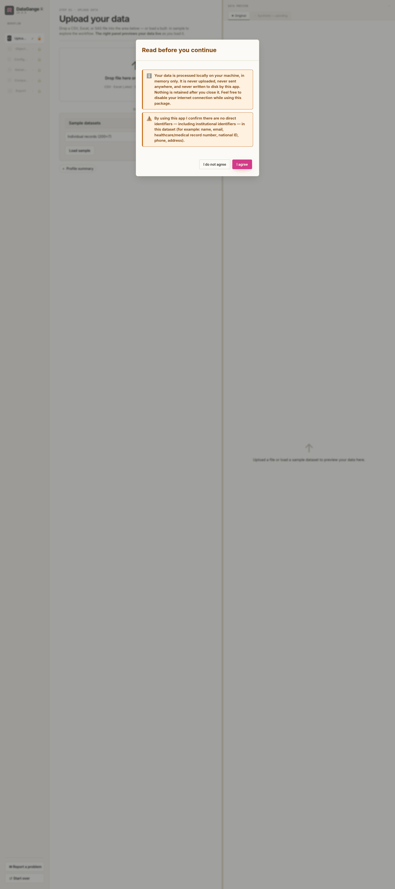
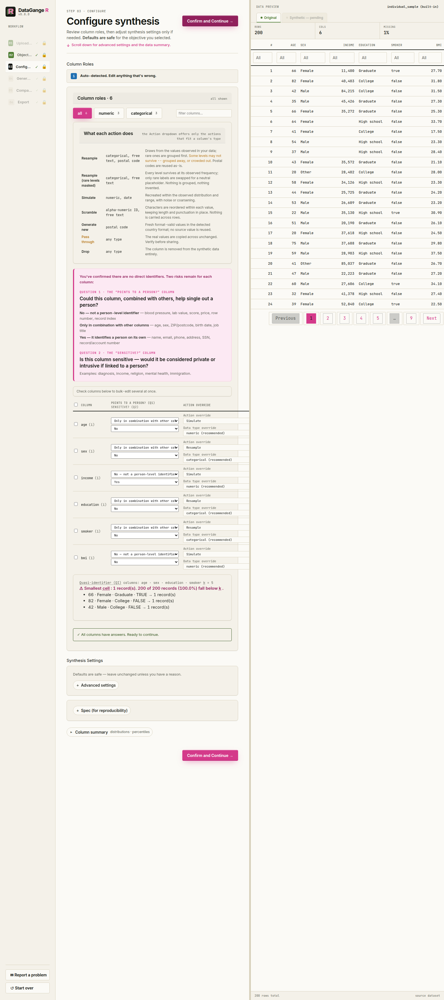

DataGangeR creates synthetic data doubles from real datasets so you can prototype code, build Shiny apps, teach, and work with coding Agents without sharing the original dataset.
📖 Documentation: https://lennon-li.github.io/dataganger/

Want an Agent to build on your data — without ever handing it over?
Let a coding Agent work at full speed on a synthetic stand-in for your dataset. You decide the privacy rules once; the Agent gets safe synthetic data — or a reproducible recipe to make it — and never reads the real data. And the package makes no network calls, so nothing ever leaves your machine.
- 🔒 The Agent never touches the real data — it gets a synthetic bundle, or a saved recipe (
spec+roles+seed) it runs back through the package to regenerate safe data itself. The real records stay out of the shared bundle. - 🧭 The human gates privacy once — attest there are no direct identifiers, then answer two questions per column (does it point to a person? is it sensitive?). Those answers drive the synthesis.
- 📴 Provably offline — the package makes no network calls and launches no browser; a shipped self-test and a no-network CI job prove it. Open source, so you can verify your own copy.
- ⚙️ Real synthesis — synthpop + k-anonymity for relationship-aware, disclosure-controlled output you can inspect (with a dependency-free internal engine as the automatic fallback).
Let an Agent build on your data. Keep your data. Both.
flowchart LR
R[(Your real data)] --> G{Human gates privacy<br/>once, in the UI}
G -->|Path A| Bun[Synthetic bundle] --> AG1[Agent builds on safe data]
G -->|Path B| Rec[Saved recipe<br/>spec + roles + seed] --> CLI[Agent runs the package] --> AG2[Agent regenerates safe data<br/>never reads the real data][!TIP] ### 🔒 Safe to try — your data never leaves your machine ✅ Processed locally, in memory only — never uploaded, never written to disk by the app, gone when you close it. ✅ No network calls and no browser launch — proven by a shipped self-test and a no-network CI job. ✅ Open source — you (or your IT team) can verify your own copy.
No account. No upload. No cloud. Point it at a sample dataset and see for yourself.
Overview
Analysts often need to share data structure with teammates, students, or coding Agents. Sharing the original data is not always possible. DataGangeR generates a synthetic “doppelganger” that preserves the structure, distributions, and relationships you need for development while reducing the need to expose original records.
Important: Synthetic data is intended to reduce direct disclosure risk, not to replace a formal privacy assessment. Review the comparison and privacy warnings before sharing any output externally.
Installation
# Development version from GitHub:
# install.packages("pak")
pak::pak(c("lennon-li/dataganger", "synthpop"))Strongly recommended: install synthpop (above) for full-fidelity, relationship-aware synthesis. It is optional — without it, DataGangeR automatically falls back to the dependency-free internal engine (with a warning), so nothing breaks; the synthetic data is just marginal rather than relationship-preserving.
The interactive app
The guided Shiny app takes you from a real dataset to a shareable synthetic bundle in six steps — pick an objective, upload your data (or load a built-in sample), configure by answering two questions per column (does it point to a person? is it sensitive?) and reviewing what DataGangeR will do, generate the synthetic double, compare real vs. synthetic distributions, and export the bundle. The sidebar also includes a Report a problem button with a copyable issue report.
How privacy gating works. DataGangeR starts with a no-direct-identifiers attestation, runs an early local fail-safe scan, then hard-gates Configure until you answer two privacy questions for every column. Those answers drive the synthesis rules and the exported Agent workflow. See the Privacy gating and Agent workflows vignette.
| Classify columns | Compare real vs. synthetic |
|---|---|
 |
 |
Use it from R
Every step the app performs is a plain function call, so you can script the whole pipeline without the UI. Objective presets are:
-
development(the default) — balanced protection for prototyping and app development -
demo— strongest protection, best for teaching and reviewed external sharing -
analytics— highest fidelity, with more emphasis on preserving relationships
An end-to-end reproducible pipeline looks like this:
library(dataganger)
dat <- read_input("my-data.csv") # or: individual_sample
profile <- profile_data(dat)
roles <- detect_roles(dat, profile)
spec <- synth_spec(purpose = "development", roles = roles, seed = 42)
syn <- synthesize_data(dat, spec, roles)
export_synthetic(syn, original = dat, path = "dataganger_bundle.zip")
# Or do the whole thing in one call, straight from the raw file:
make_agent_bundle("my-data.csv", out = "dataganger_bundle.zip", seed = 42)
# Open a pre-filled issue for bugs, feedback, or feature requests
report_issue("The compare step was hard to interpret", context = "Shiny app")The export is a single bundle: the synthetic CSV at the root, plus one folder for the human and one for the agent.
synthetic_data.csv # the synthetic stand-in — the product
human/human.md # what was done, plus the privacy notes
human/comparison_report.html # real vs. synthetic fidelity
agent/recipe.yaml # spec + roles + seed — regenerate safe data
agent/AGENT.md # the agent workflow guide (never read the real data)
agent/manifest.jsonCLI / agent workflow
The CLI follows the same spec-first pipeline an agent would use:
dataganger profile my-data.csv --out profile.json
dataganger roles my-data.csv --out roles.yaml
dataganger spec --purpose development --out spec.yaml
# Edit spec.yaml if needed: set seed, engine/name_strategy overrides,
# acknowledge_risk: true for analytics, and disclosure_roles: <column>: <direct|quasi|sensitive|none>.
# disclosure_roles is the compatibility YAML form; the app uses identifies + sensitive as the primary model.
dataganger synthesize my-data.csv --spec spec.yaml --out dataganger_bundle.zip
dataganger inspect dataganger_bundle.zipThe bundle’s agent/recipe.yaml captures the spec, roles, and seed. To reproduce or vary the synthetic data later, an agent runs the package against that recipe — no notebook, and without ever opening the real data:
unzip dataganger_bundle.zip -d dataganger_bundle
dataganger synthesize my-data.csv \
--recipe dataganger_bundle/agent/recipe.yaml \
--out check.zipFor the full command list, run dataganger::dataganger_cli(c("--help")). Agents can print or copy the packaged workflow guide with dataganger skill [--out <file>].
Synthesis engines
DataGangeR uses two synthesis engines. By default the engine is chosen automatically by your objective: demo uses the dependency-free internal marginal engine by default, development requests moderate relationship preservation and therefore routes to synthpop when it is installed (otherwise falling back to the internal engine with a warning), and analytics is the high-fidelity path that requires explicit risk acknowledgement. In the Shiny app and CLI spec you can also choose the engine explicitly (auto, internal, or synthpop). Installing synthpop is strongly recommended (install.packages("synthpop")) for relationship-preserving synthesis; the internal engine is the dependency-free fail-safe used automatically when synthpop is absent.
Please cite synthpop when you use that engine:
Nowok B, Raab GM, Dibben C (2016). “synthpop: Bespoke Creation of Synthetic Data in R.” Journal of Statistical Software, 74(11), 1-26. doi:10.18637/jss.v074.i11
Design principles
- Package-first. All core functions work from the R console; Shiny is an optional interface layer.
-
Configurable disclosure posture. Each synthesis purpose (
development,demo,analytics, etc.) applies appropriate defaults for coarsening, name handling, and rare-level treatment. - Honest comparisons. The comparison report quantifies how closely the synthetic data mirrors the original so you can make an informed sharing decision.
- No overclaims. DataGangeR will not tell you the output is safe for public release. That determination depends on your data, context, and applicable regulations.